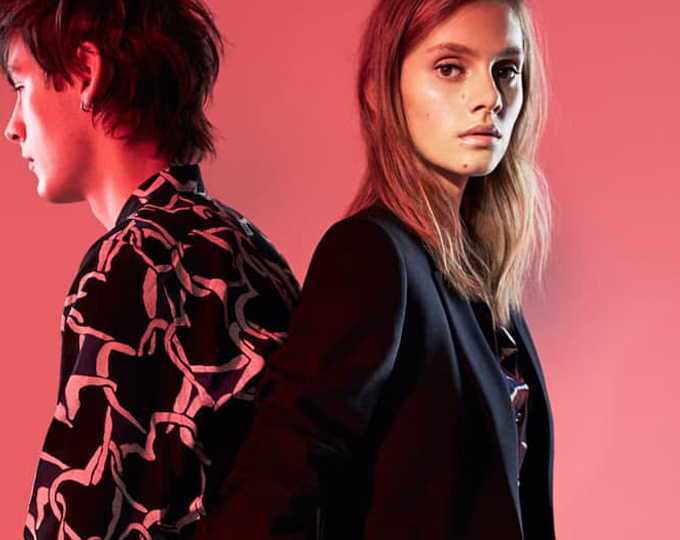

홈 > 브랜드 매거진 > 폴 스미스
폴 스미스
폴 스미스(Paul Smith)는 영국의 클래식 테일러링에 위트와 색채를 결합한 독립 패션 브랜드이다.
산업 분야 패션·럭셔리 · 공개 등급 편집 검수 · 브랜드 평가 4.7 ★


한눈에 보는 브랜드
폴 스미스(Paul Smith)는 1946년생 영국 디자이너 폴 브라이얼리 스미스가 1970년 잉글랜드 노팅엄 바이어드 레인의 3평짜리 작은 매장에서 출발시킨 영국 패션 브랜드다. '클래식 위드 어 트위스트(classic with a twist)'를 핵심 철학으로, 정장과 셔츠 같은 전통 의상에 멀티컬러 스트라이프와 위트를 더하는 방식으로 알려져 있다.
현재 60여 개국에 130개 매장을 운영하며 정장, 셔츠, 지갑, 머플러, 향수, 홈웨어까지 폭넓게 다룬다.
브랜드 관점
영국 패션 시장에서 폴 스미스의 차별점은 무게감 있는 정통 테일러링에 장난기와 색채를 결합한 '위트있는 클래식'에 있다. 40가지 색을 불규칙한 폭으로 배열한 시그니처 멀티스트라이프는 로고에 가까운 식별 장치로 굳어져, 셔츠 커프스 안쪽이나 니트, 액세서리에서 예상치 못한 방식으로 드러난다.
대형 그룹에 흡수된 경쟁사들과 달리 창업자 폴 스미스가 다수 지분을 보유한 채 직접 경영하며, 매 컬렉션에 개인의 창작 시각을 반영하는 몇 안 남은 독립 디자이너로 꼽힌다. 한국에서는 17만~27만원대 스트라이프 반지갑과 시그니처 스트라이프 울·캐시미어 머플러가 선물용으로 꾸준한 인기를 얻으며, 백화점과 면세 채널을 통해 폭넓게 유통된다.
시작과 성장
폴 스미스는 15세에 노팅엄의 의류 창고에서 심부름꾼으로 일을 시작했고, 17세에 겪은 큰 사고로 3개월 넘게 입원하던 중 그래픽과 패션의 세계를 접했다. 1970년 노팅엄 바이어드 레인 6번지에 창문도 없는 3평 규모의 '폴 스미스 베트망 푸르 옴므' 매장을 열었고, 왕립예술대학에서 패션을 공부한 아내 폴린이 초기 제품 제작에 함께 참여했다.
런던 외 지역에서 겐조, 마거릿 하월 등 동시대 브랜드를 갖춘 드문 남성복 거점으로 입소문을 탔다. 1976년 파리에서 첫 남성복 컬렉션을 발표하며 국제 무대에 진입했고, 이후 일본 시장에서 큰 호응을 얻으며 일본을 핵심 시장으로 키워 세계 60여 개국으로 매장을 확장했다.
브랜드 아이덴티티
폴 스미스의 가치관은 일상 속 사물에서 영감을 찾는 호기심과, 전통을 존중하되 비틀어 즐거움을 주는 태도에 뿌리를 둔다. 1970년대부터 이어진 멀티스트라이프와 흘려 쓴 핸드라이팅 로고가 핵심 식별 요소로, 진중함과 유머를 동시에 담아낸다.
타깃은 정통 영국 테일러링을 즐기되 색과 디테일의 재미를 원하는 남녀 고객이며, 브랜드 보이스는 격식과 장난기를 오가는 따뜻하고 위트 있는 어조를 유지한다.
제품과 서비스
주력 품목은 테일러드 정장과 셔츠, 멀티스트라이프 티셔츠, 가죽 지갑, 머플러, 신발, 향수, 홈웨어다. 정장은 약 140만~210만원대, 셔츠는 8만~50만원대, 가죽 반지갑은 한국 기준 17만~27만원대에 형성된다.
직영 매장과 자사 온라인몰을 중심으로, 한국에서는 백화점과 면세점, 온라인 편집몰을 통해 유통된다.
현재 상태
폴 스미스는 잉글랜드에 기반을 둔 본사를 노팅엄과 런던을 거점으로 운영하며, 창업자 폴 스미스가 다수 지분을 보유한 독립 기업으로 남아 있다. 2025년 11월 기준 미국, 일본, 한국을 포함한 60여 개국에 약 130개 매장을 두고 있다.
2024년 6월 마감 회계연도 매출은 전년 대비 7% 줄어든 1억 9,780만 파운드로 집계됐고, 일본이 전체 매출의 절반가량을 차지한다. 비공개 세부 지표는 미공개다.
타임라인
BI/CI 변천사
 BI/CI 아카이브BI/CI 아카이브
BI/CI 아카이브BI/CI 아카이브함께 읽을 브랜드
 패션·럭셔리 · 편집 검수자라
패션·럭셔리 · 편집 검수자라자라는 패션을 예측하기보다 시장의 반응을 빠르게 읽고 다시 매장으로 돌려보내는 브랜드다. 트렌드를 길게 기획하는 대신 고객 반응과 유통 속도를 무기로 삼아, 패션을...
 패션·럭셔리 · 매거진 완성스와치
패션·럭셔리 · 매거진 완성스와치스와치는 시계를 고가의 정밀기기에서 매일 바꿔 착용할 수 있는 패션 언어로 전환했다. 시간을 알려주는 기능보다 색, 그래픽, 컬렉션, 가벼운 가격대가 브랜드 경험의...
 패션·럭셔리 · 매거진 완성프라다
패션·럭셔리 · 매거진 완성프라다프라다는 아름다움을 익숙한 화려함보다 지적인 긴장감으로 표현하는 브랜드다. 소재와 형태, 절제된 색감은 패션을 단순한 장식이 아니라 관찰과 해석의 대상으로 만든다.
비비안 웨스트우드(Vivienne Westwood)는 펑크를 주류 패션으로 끌어올린 영국의 독립 럭셔리 패션 브랜드이다.
 패션·럭셔리 · 자료 기반에르메네질도 제냐
패션·럭셔리 · 자료 기반에르메네질도 제냐제냐(Zegna)는 1910년 이탈리아에서 모직 원단 공장으로 출발한 럭셔리 남성복 브랜드이다.
 패션·럭셔리 · 매거진 완성루이비통
패션·럭셔리 · 매거진 완성루이비통루이비통은 여행가방에서 출발했지만, 이동의 기능을 럭셔리한 삶의 상징으로 확장했다. 브랜드의 헤리티지는 물건을 담는 도구가 아니라 이동하는 사람의 취향과 지위를 표현...
 패션·럭셔리 · 편집 검수롤렉스
패션·럭셔리 · 편집 검수롤렉스롤렉스(Rolex)는 스위스 제네바에 본사를 둔 럭셔리 시계 제조사이다.
 패션·럭셔리 · 편집 검수버버리
패션·럭셔리 · 편집 검수버버리버버리(Burberry)는 1856년 설립된 영국의 럭셔리 패션 하우스이다.